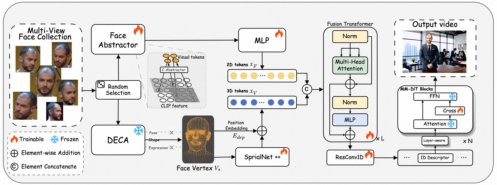

Overview of FantasyID
Overview of FantasyID. The framework constructs a multi-view face collection, randomly selects one face as the reference input, and employs face abstractor to extract 2D visual tokens while using DECA to extract 3D face vertex tokens. We fuse both the 2D and 3D tokens with fusion transformer layers and guide DiT-based model via a layer-aware signal injection method.
Visual Results
A woman rides a bicycle through the lively streets of a bustling city. She wears stylish, casual attire, her hair flowing freely in the breeze created by her movement. The streets are filled with people, colorful storefronts, and a variety of street performers. The sounds of urban life—honking cars, chattering pedestrians, and distant music—blend into a vibrant symphony. The sun is high in the sky, casting bright light and creating defined shadows. Her expression is one of enjoyment and exhilaration as she navigates the energetic environment with skill and ease.
A man strolls through a bustling night market, the air filled with the mingling scents of sizzling street food and the hum of lively conversation. He wears casual attire, his eyes wide with curiosity as he takes in the vibrant stalls lining the narrow paths. Bright, colorful lights hang overhead, casting a festive glow on the diverse array of merchandise. Vendors call out, showcasing their goods, ranging from handmade crafts to an assortment of snacks. The clinking of coins and the cheerful bargaining of patrons create an atmosphere of excitement and energy, as he navigates the dynamic, sensory-rich environment.
A woman in an elegant evening gown stands at a glamorous ball, her smile captivating those around her. The ballroom is grand, with crystal chandeliers casting a warm glow over the polished marble floors and intricately decorated walls. The sound of classical music fills the air, played by a live orchestra at the corner of the room. She holds a glass of champagne, her other hand lightly resting on the arm of a companion. Her movements are graceful, and she exudes confidence and sophistication, adding to the charm and elegance of the evening.

A man sits in a cozy living room, strumming a guitar with a look of deep concentration and passion. The room is warmly lit, with soft, ambient lighting casting gentle shadows. Around him, shelves filled with books and personal mementos create a homey, intimate atmosphere. He wears comfortable, casual clothes, and his fingers move deftly over the strings, producing melodious tunes that fill the space. The sound of the guitar is clear and resonant, melding with the soft crackle of a fireplace nearby. His foot taps in rhythm, and his expression is one of contentment and emotional connection to the music.
A young woman standing in a field of tall grass. She is wearing a gray crop top and appears to be looking off into the distance. The background shows a body of water, possibly a lake or sea, with some rocks visible on the shore. The sky is overcast, suggesting it might be a cloudy day. The overall atmosphere of the scene is serene and natural.
A young person standing next to a vintage car under a bridge at night. The person is wearing a blue jacket and a black crop top, and they are posing with their arms extended. The background is illuminated by city lights, creating a vibrant and urban atmosphere. The car appears to be an older model, possibly from the 1980s or 1990s, with its headlights on, adding to the dramatic effect of the scene. The overall mood of the video is cool and edgy, with a strong emphasis on the urban environment and the person's confident stance.
A man strolls through a bustling night market, the air filled with the mingling scents of sizzling street food and the hum of lively conversation. He wears casual attire, his eyes wide with curiosity as he takes in the vibrant stalls lining the narrow paths. Bright, colorful lights hang overhead, casting a festive glow on the diverse array of merchandise. Vendors call out, showcasing their goods, ranging from handmade crafts to an assortment of snacks. The clinking of coins and the cheerful bargaining of patrons create an atmosphere of excitement and energy, as he navigates the dynamic, sensory-rich environment.

A man sits in a cozy living room, strumming a guitar with a look of deep concentration and passion. The room is warmly lit, with soft, ambient lighting casting gentle shadows. Around him, shelves filled with books and personal mementos create a homey, intimate atmosphere. He wears comfortable, casual clothes, and his fingers move deftly over the strings, producing melodious tunes that fill the space. The sound of the guitar is clear and resonant, melding with the soft crackle of a fireplace nearby. His foot taps in rhythm, and his expression is one of contentment and emotional connection to the music.
A woman stands at the summit of a mountain, warmly dressed and watching as the first light of dawn breaks over the horizon. The sky is a palette of soft pastels, with the sun beginning to rise and bathe the landscape in golden hues. The air is crisp and fresh, filled with the scent of pine and the silence of the early morning. Her face reflects awe and serenity as she takes in the breathtaking view. The vast panorama below shows rolling hills and distant valleys, gradually illuminated by the growing light. This moment of solitude and natural beauty is deeply rejuvenating.
A young girl is deeply absorbed in a book, curled up in a cozy nook near a window. Her expression shows concentration and contentment, surrounded by soft cushions and warm sunlight filtering through curtains. The atmosphere is peaceful and inviting, suggesting a love for literature and a personal retreat for reading and imagination.
Comparison
A woman standing in a kitchen, wearing an apron and a denim shirt. She is standing in front of a stove with a pot on it, and there is a cutting board with sliced vegetables on the counter in front of her. The kitchen has a modern design with white countertops and a sink visible in the background. The woman appears to be preparing a meal, as she is pointing to the sliced vegetables on the cutting board and talking to the camera. The video seems to be a tutorial or demonstration of some sort, possibly related to cooking or food preparation. The woman's facial expression and body language suggest that she is confident and knowledgeable about the subject matter. Overall, the video provides a glimpse into the woman's cooking style and the environment in which she works.
FantasyID
Consis-ID
ID-Animator
A man standing in a room with a dark blue wall and a large window with a white frame. He is wearing a gray cap, a gray t-shirt, and glasses. The man is holding an open book or portfolio with colorful illustrations and text on the pages. The illustrations appear to be abstract or artistic in nature, with vibrant colors and various shapes. The text on the pages is in different languages, including English, Spanish, and what seems to be Japanese. The man is smiling and looking directly at the camera, seemingly presenting the book or portfolio. The room has a modern and minimalist design, with a large green plant visible in the background. The overall atmosphere of the video is artistic and creative.
FantasyID
Consis-ID
ID-Animator
A man speaking into a microphone. He is wearing a white shirt and has a beard. The man appears to be addressing an audience, as he is holding the microphone close to his mouth and gesturing with his right hand. The background is dark, suggesting that the event is taking place outdoors at night or in a dimly lit indoor setting. The man's expression and body language indicate that he is engaged in delivering a speech or presentation.
FantasyID
Consis-ID
ID-Animator

A young man with short, bleached blonde hair and a confident expression. He is wearing a black leather jacket over a white t-shirt. The setting appears to be an indoor location with a high ceiling and a staircase in the background. The lighting is dramatic, with a mix of blue and pink hues, creating a moody and atmospheric effect. The man is striking a pose with one arm raised and the other extended, suggesting a sense of flair or performance. The overall scene has a stylish and edgy vibe.
FantasyID
Consis-ID
ID-Animator
BibTeX
@misc{zhang2025fantasyidfaceknowledgeenhanced,
title={FantasyID: Face Knowledge Enhanced ID-Preserving Video Generation},
author={Yunpeng Zhang and Qiang Wang and Fan Jiang and Yaqi Fan and Mu Xu and Yonggang Qi},
year={2025},
eprint={2502.13995},
archivePrefix={arXiv},
primaryClass={cs.GR},
url={https://arxiv.org/abs/2502.13995},
}